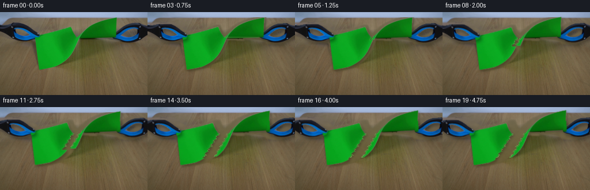
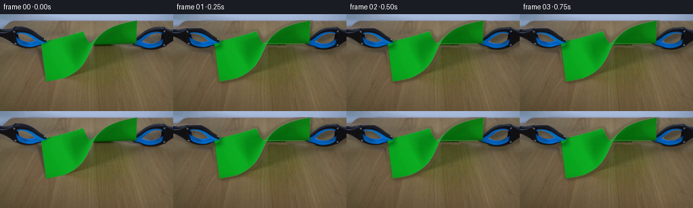

CODING AGENTS AS PIXEL WORLD MODELS
traex/DeepSeek-V4.1-Flash · 0044
点击播放 · 原生 RGB 像素
逐轮保存的候选
回放视频、检查图与代码变化。
每份候选均可单独播放。实际图片检查记录在下方工具轨迹中。
候选 01播放与检查图
点击播放 · 原生 RGB 像素


展开代码变化
--- 上一保存版本
+++ 本次保存版本
@@ -0,0 +1,363 @@
+"""Generate the tearing-paper RGB sequence from the supplied first frame."""
+
+from pathlib import Path
+
+import cv2
+import numpy as np
+from PIL import Image
+
+import artifact_io
+
+
+ROOT = Path(__file__).resolve().parent
+WIDTH, HEIGHT = 256, 144
+N_FRAMES, FPS = 20, 4
+
+
+def largest_component(mask: np.ndarray) -> np.ndarray:
+ count, labels, stats, _ = cv2.connectedComponentsWithStats(
+ mask.astype(np.uint8), connectivity=8
+ )
+ if count <= 1:
+ return np.zeros_like(mask, dtype=bool)
+ index = 1 + int(np.argmax(stats[1:, cv2.CC_STAT_AREA]))
+ return labels == index
+
+
+def fill_holes(mask: np.ndarray) -> np.ndarray:
+ contours, _ = cv2.findContours(
+ mask.astype(np.uint8), cv2.RETR_EXTERNAL, cv2.CHAIN_APPROX_SIMPLE
+ )
+ filled = np.zeros_like(mask, dtype=np.uint8)
+ cv2.drawContours(filled, contours, -1, 1, cv2.FILLED)
+ return filled.astype(bool)
+
+
+def smoothstep(value: np.ndarray | float) -> np.ndarray | float:
+ value = np.clip(value, 0.0, 1.0)
+ return value * value * (3.0 - 2.0 * value)
+
+
+def build_masks(source: np.ndarray):
+ rgb = source.astype(np.float32)
+ red, green, blue = rgb.transpose(2, 0, 1)
+
+ # Green construction paper, including the darker shaded folds.
+ green_score = green - (red + blue) * 0.5
+ paper_raw = (
+ (green_score > 15.0)
+ & (green > 34.0)
+ & (green > red * 1.12)
+ & (green > blue * 1.08)
+ )
+ paper_raw = cv2.morphologyEx(
+ paper_raw.astype(np.uint8), cv2.MORPH_CLOSE, np.ones((3, 3), np.uint8)
+ )
+ paper = fill_holes(largest_component(paper_raw.astype(bool)))
+ paper[:9] = False
+ paper[103:] = False
+
+ yy, xx = np.mgrid[:HEIGHT, :WIDTH]
+ left_poly = np.array(
+ [[0, 21], [43, 21], [54, 24], [69, 40], [67, 45],
+ [49, 52], [36, 51], [19, 44], [0, 34]],
+ dtype=np.int32,
+ )
+ right_poly = np.array(
+ [[214, 20], [255, 19], [255, 54], [228, 54], [209, 51],
+ [195, 43], [197, 27], [204, 22]],
+ dtype=np.int32,
+ )
+
+ left_roi = np.zeros((HEIGHT, WIDTH), np.uint8)
+ right_roi = np.zeros((HEIGHT, WIDTH), np.uint8)
+ cv2.fillPoly(left_roi, [left_poly], 1)
+ cv2.fillPoly(right_roi, [right_poly], 1)
+
+ dark_or_blue = (
+ ((red + green + blue) < 205.0)
+ | ((blue > red + 5.0) & (blue > 33.0))
+ | ((blue > green + 7.0) & (blue > 35.0))
+ )
+ tool_color = dark_or_blue.astype(np.uint8)
+ tool_color = cv2.morphologyEx(
+ tool_color, cv2.MORPH_CLOSE, np.ones((3, 3), np.uint8)
+ )
+
+ left_tool = (tool_color.astype(bool) & left_roi.astype(bool))
+ right_tool = (tool_color.astype(bool) & right_roi.astype(bool))
+ left_tool = largest_component(left_tool)
+ right_tool = largest_component(right_tool)
+
+ # Preserve the dark gripping jaws while dropping isolated shadow specks.
+ left_tool = cv2.morphologyEx(
+ left_tool.astype(np.uint8), cv2.MORPH_CLOSE, np.ones((3, 3), np.uint8)
+ ).astype(bool)
+ right_tool = cv2.morphologyEx(
+ right_tool.astype(np.uint8), cv2.MORPH_CLOSE, np.ones((3, 3), np.uint8)
+ ).astype(bool)
+ left_tool = largest_component(left_tool)
+ right_tool = largest_component(right_tool)
+ return paper, left_tool, right_tool
+
+
+def build_background(source: np.ndarray, paper: np.ndarray, tools: np.ndarray):
+ """Fit the unobstructed tabletop, then restore it beneath the objects."""
+ h, w = paper.shape
+ yy, xx = np.mgrid[:h, :w]
+ rgb = source.astype(np.float32)
+
+ object_mask = (paper | tools).astype(np.uint8)
+ exclusion = cv2.dilate(object_mask, np.ones((7, 7), np.uint8)).astype(bool)
+
+ sample = (yy >= 11) & (yy <= 143) & ~exclusion
+ sx = xx[sample].astype(np.float32) / (w - 1)
+ sy = yy[sample].astype(np.float32) / (h - 1)
+ design = np.column_stack(
+ [
+ np.ones_like(sx),
+ sx,
+ sy,
+ sx * sx,
+ sy * sy,
+ sx * sy,
+ ]
+ )
+
+ gx = xx.astype(np.float32) / (w - 1)
+ gy = yy.astype(np.float32) / (h - 1)
+ full_design = np.column_stack(
+ [
+ np.ones(h * w, dtype=np.float32),
+ gx.ravel(),
+ gy.ravel(),
+ (gx * gx).ravel(),
+ (gy * gy).ravel(),
+ (gx * gy).ravel(),
+ ]
+ )
+
+ fitted = np.empty((h, w, 3), np.float32)
+ for channel in range(3):
+ coefficients, *_ = np.linalg.lstsq(
+ design, rgb[:, :, channel][sample], rcond=None
+ )
+ fitted[:, :, channel] = (full_design @ coefficients).reshape(h, w)
+
+ rng = np.random.default_rng(4405)
+ broad = cv2.GaussianBlur(
+ rng.normal(0.0, 1.0, (h, w)).astype(np.float32), (0, 0), 2.6
+ )
+ fine = rng.normal(0.0, 1.0, (h, w)).astype(np.float32)
+ broad /= max(float(broad.std()), 1e-6)
+ fine /= max(float(fine.std()), 1e-6)
+ texture = 2.0 * broad + 0.75 * fine
+ fitted += texture[:, :, None] * np.array([0.85, 0.72, 0.55], np.float32)
+
+ # A soft boundary shadow keeps the wall-to-table transition natural.
+ table_fill = np.clip(fitted, 0.0, 255.0)
+ base = rgb.copy()
+ blend = cv2.GaussianBlur(exclusion.astype(np.float32), (0, 0), 1.1)
+ blend *= (yy >= 9).astype(np.float32)
+ base = base * (1.0 - blend[:, :, None]) + table_fill * blend[:, :, None]
+ return np.clip(base, 0.0, 255.0).astype(np.uint8)
+
+
+def feather_alpha(mask: np.ndarray, sigma: float = 0.65) -> np.ndarray:
+ alpha = cv2.GaussianBlur(mask.astype(np.float32), (0, 0), sigma)
+ alpha[mask.astype(bool)] = np.maximum(alpha[mask.astype(bool)], 0.88)
+ return np.clip(alpha, 0.0, 1.0)
+
+
+def warp_rgba(rgb: np.ndarray, alpha: np.ndarray, dx: np.ndarray, dy: np.ndarray):
+ xx, yy = np.meshgrid(
+ np.arange(WIDTH, dtype=np.float32),
+ np.arange(HEIGHT, dtype=np.float32),
+ )
+ map_x = xx - dx.astype(np.float32)
+ map_y = yy - dy.astype(np.float32)
+ warped_rgb = cv2.remap(
+ rgb,
+ map_x,
+ map_y,
+ interpolation=cv2.INTER_LINEAR,
+ borderMode=cv2.BORDER_REPLICATE,
+ )
+ warped_alpha = cv2.remap(
+ alpha,
+ map_x,
+ map_y,
+ interpolation=cv2.INTER_LINEAR,
+ borderMode=cv2.BORDER_CONSTANT,
+ borderValue=0.0,
+ )
+ return warped_rgb.astype(np.float32), np.clip(warped_alpha, 0.0, 1.0)
+
+
+def composite(base: np.ndarray, rgb: np.ndarray, alpha: np.ndarray) -> np.ndarray:
+ a = alpha[:, :, None]
+ return base * (1.0 - a) + rgb.astype(np.float32) * a
+
+
+def add_shadow(frame: np.ndarray, alpha: np.ndarray, offset, blur, strength):
+ ox, oy = offset
+ shifted = np.zeros_like(alpha, dtype=np.float32)
+ x0, x1 = max(0, ox), min(WIDTH, WIDTH + ox)
+ y0, y1 = max(0, oy), min(HEIGHT, HEIGHT + oy)
+ sx0, sx1 = max(0, -ox), min(WIDTH, WIDTH - ox)
+ sy0, sy1 = max(0, -oy), min(HEIGHT, HEIGHT - oy)
+ shifted[y0:y1, x0:x1] = alpha[sy0:sy1, sx0:sx1]
+ shifted = cv2.GaussianBlur(shifted, (0, 0), blur)
+ return frame * (1.0 - strength * shifted[:, :, None])
+
+
+def tear_x(yy: np.ndarray) -> np.ndarray:
+ dy = np.maximum(yy - 43.0, 0.0)
+ return (
+ 133.0
+ - 0.62 * dy
+ + 0.75 * np.sin(dy * 0.84)
+ + 0.38 * np.sin(dy * 2.17 + 0.7)
+ )
+
+
+def make_pieces(paper: np.ndarray, progress: float):
+ yy, xx = np.mgrid[:HEIGHT, :WIDTH]
+ split = tear_x(yy.astype(np.float32))
+ front = 43.0 + 55.0 * progress
+ right = paper & (yy <= front) & (xx >= split)
+ left = paper & ~right
+
+ # Ragged fibers and a brighter fractured boundary are assigned before warping.
+ left_edge = left & cv2.dilate(right.astype(np.uint8), np.ones((3, 3), np.uint8)).astype(bool)
+ right_edge = right & cv2.dilate(left.astype(np.uint8), np.ones((3, 3), np.uint8)).astype(bool)
+ return left, right, left_edge, right_edge
+
+
+def tint_edges(rgb: np.ndarray, edge: np.ndarray, side: int) -> np.ndarray:
+ result = rgb.astype(np.float32).copy()
+ edge_f = cv2.GaussianBlur(edge.astype(np.float32), (0, 0), 0.45)
+ light = np.array([66.0, 181.0, 67.0], np.float32)
+ pale = np.array([126.0, 195.0, 101.0], np.float32)
+ tint = light if side < 0 else pale
+ result = result * (1.0 - 0.35 * edge_f[:, :, None]) + tint * (0.35 * edge_f[:, :, None])
+ return np.clip(result, 0.0, 255.0)
+
+
+def draw_fibers(frame, left_alpha, right_alpha, progress):
+ if progress < 0.10:
+ return frame
+ overlay = frame.copy()
+ fiber_alpha = np.zeros((HEIGHT, WIDTH), np.float32)
+ rng = np.random.default_rng(901)
+ for y in range(44, HEIGHT):
+ left_xs = np.flatnonzero(left_alpha[y] > 0.48)
+ right_xs = np.flatnonzero(right_alpha[y] > 0.48)
+ if len(left_xs) and len(right_xs):
+ lx, rx = int(left_xs.max()), int(right_xs.min())
+ if 0 < rx - lx < 50 and rng.random() < 0.54:
+ length = 1 + int(rng.integers(0, 3))
+ color = np.array([117, 188, 87], np.uint8)
+ cv2.line(overlay, (lx + 1, y), (min(lx + length, rx), y), color.tolist(), 1)
+ cv2.line(overlay, (rx - 1, y), (max(rx - length, lx), y), color.tolist(), 1)
+ fiber_alpha[y, lx + 1 : min(lx + length + 1, WIDTH)] = 0.55
+ fiber_alpha[y, max(0, rx - length) : max(0, rx)] = 0.55
+ return composite(frame, overlay, fiber_alpha)
+
+
+def render_frame(
+ index: int,
+ source: np.ndarray,
+ background: np.ndarray,
+ paper: np.ndarray,
+ left_tool_mask: np.ndarray,
+ right_tool_mask: np.ndarray,
+) -> np.ndarray:
+ if index == 0:
+ return source.copy()
+
+ progress = float(smoothstep((index - 2.0) / 17.0))
+ pull = 14.0 * progress
+ left, right, left_edge, right_edge = make_pieces(paper, progress)
+
+ left_rgb = tint_edges(source, left_edge, -1)
+ right_rgb = tint_edges(source, right_edge, +1)
+
+ yy, xx = np.mgrid[:HEIGHT, :WIDTH]
+ left_dx = -pull * (0.82 + 0.18 * yy / 100.0)
+ left_dy = 0.20 * pull + 0.0022 * pull * (xx - 120.0)
+ right_dx = pull * (0.84 + 0.16 * yy / 100.0)
+ right_dy = -0.13 * pull - 0.0018 * pull * (xx - 120.0)
+
+ left_alpha_src = feather_alpha(left, 0.62)
+ right_alpha_src = feather_alpha(right, 0.62)
+ left_warped, left_alpha = warp_rgba(left_rgb, left_alpha_src, left_dx, left_dy)
+ right_warped, right_alpha = warp_rgba(right_rgb, right_alpha_src, right_dx, right_dy)
+
+ frame = background.astype(np.float32)
+ frame = add_shadow(frame, left_alpha, (2, 3), 2.2, 0.25)
+ frame = add_shadow(frame, right_alpha, (3, 2), 2.0, 0.22)
+ frame = composite(frame, left_warped, left_alpha)
+ frame = composite(frame, right_warped, right_alpha)
+ frame = draw_fibers(frame, left_alpha, right_alpha, progress)
+
+ tool_dx = pull
+ left_tool_alpha_src = feather_alpha(left_tool_mask, 0.55)
+ right_tool_alpha_src = feather_alpha(right_tool_mask, 0.55)
+ zeros = np.zeros((HEIGHT, WIDTH), np.float32)
+ left_tool_warped, left_tool_alpha = warp_rgba(
+ source.astype(np.float32),
+ left_tool_alpha_src,
+ -tool_dx + zeros,
+ 0.11 * tool_dx + zeros,
+ )
+ right_tool_warped, right_tool_alpha = warp_rgba(
+ source.astype(np.float32),
+ right_tool_alpha_src,
+ tool_dx + zeros,
+ -0.08 * tool_dx + zeros,
+ )
+
+ frame = add_shadow(frame, left_tool_alpha, (3, 4), 2.8, 0.34)
+ frame = add_shadow(frame, right_tool_alpha, (3, 4), 2.8, 0.32)
+ frame = composite(frame, left_tool_warped, left_tool_alpha)
+ frame = composite(frame, right_tool_warped, right_tool_alpha)
+
+ # A very light global contrast lift offsets resampling softness in later frames.
+ frame = np.clip((frame - 128.0) * 1.006 + 128.0, 0.0, 255.0)
+ return frame.astype(np.uint8)
+
+
+def main():
+ source = np.asarray(Image.open(ROOT / "first_frame.png").convert("RGB"))
+ paper, left_tool, right_tool = build_masks(source)
+ tools = left_tool | right_tool
+ background = build_background(source, paper, tools)
+
+ frames = np.empty((N_FRAMES, HEIGHT, WIDTH, 3), np.uint8)
+ for index in range(N_FRAMES):
+ frames[index] = render_frame(
+ index, source, background, paper, left_tool, right_tool
+ )
+
+ assert frames.shape == (20, 144, 256, 3)
+ assert frames.dtype == np.uint8
+ assert np.array_equal(frames[0], source)
+ artifact_io.save(frames, ROOT)
+
+ writer = cv2.VideoWriter(
+ str(ROOT / "video.mp4"),
+ cv2.VideoWriter_fourcc(*"mp4v"),
+ FPS,
+ (WIDTH, HEIGHT),
+ )
+ if writer.isOpened():
+ for frame in frames:
+ writer.write(cv2.cvtColor(frame, cv2.COLOR_RGB2BGR))
+ writer.release()
+
+ Image.fromarray(background).save(ROOT / ".tmp" / "background.png")
+
+
+if __name__ == "__main__":
+ main()
可观测工具轨迹
实际执行的命令与返回图片。
命令 1exit 0
/bin/bash -c "pwd && rg --files -g '"'!*.mp4'"' -g '"'!*.mov'"' | sort"
命令 2exit 0
/bin/bash -c "sed -n '1,240p' prompt.txt"
命令 3exit 0
/bin/bash -c "sed -n '1,280p' GENERATION_RULES.md"
命令 4exit 127
/bin/bash -c "file first_frame.png && identify -verbose first_frame.png 2>/dev/null | sed -n '1,100p'"
命令 5exit 0
/bin/bash -c "sed -n '1,260p' artifact_io.py"
命令 6exit 0
/bin/bash -c "sed -n '1,260p' player_template.html"
命令 7exit 0
/bin/bash -c "python - <<'PY'
from PIL import Image
import numpy as np
im=Image.open('first_frame.png')
print(im.mode, im.size, im.getextrema())
a=np.asarray(im.convert('RGB'))
print('shape',a.shape,'dtype',a.dtype)
# coarse 16x9 mean grid as compact color values
for y in range(0,144,16):
row=[]
for x in range(0,256,16):
c=a[y:y+16,x:x+16].mean((0,1)).astype(int)
row.append('%02x%02x%02x'%tuple(c))
print(y, ' '.join(row))
# top colors quantized 16 levels
q=(a//16)*16
u,c=np.unique(q.reshape(-1,3),axis=0,return_counts=True)
idx=np.argsort(c)[-30:][::-1]
print('TOP')
for i in idx: print(tuple(u[i]), int(c[i]))
PY"命令 8exit 0
/bin/bash -c "python - <<'PY'
from PIL import Image
import numpy as np
A=np.asarray(Image.open('first_frame.png').convert('RGB')).astype(int)
R,G,B=A.transpose(2,0,1)
# likely green paper: strong green relative to red, moderate brightness
masks={
'green':(G>55)&(G>R*1.45)&(G>B*1.35),
'dark':(R+G+B<210),
'blue':(B>R*1.25)&(B>G*1.08)&(B>45),
'bright':(R+G+B>420),
}
for k,m in masks.items():
ys,xs=np.where(m)
print(k,'n',len(xs),'bbox', (xs.min(),ys.min(),xs.max(),ys.max()) if len(xs) else None,'mean',A[m].mean(0) if len(xs) else None)
# row green x extents
m=masks['green']
for y in range(0,144,4):
xs=np.where(m[y])[0]
if len(xs):
# ranges
cuts=np.where(np.diff(xs)>1)[0]
runs=[]
st=0
for c in cuts:
runs.append((xs[st],xs[c]));st=c+1
runs.append((xs[st],xs[-1]))
runs=[r for r in runs if r[1]-r[0]>=2]
if runs: print('g y',y,runs)
PY"命令 9exit 0
/bin/bash -c "python - <<'PY' mods=['numpy','PIL','scipy','cv2','skimage','imageio','matplotlib'] for m in mods: try: x=__import__(m); print(m,'OK',getattr(x,'__version__','')) except Exception as e: print(m,'NO',e) PY"
命令 10exit 0
/bin/bash -c "python - <<'PY'
from PIL import Image
import numpy as np
A=np.asarray(Image.open('first_frame.png').convert('RGB')).astype(float)
# 2x2 blocks, classify based exact averages
for by in range(0,144,2):
s=''
for bx in range(0,256,2):
c=A[by:by+2,bx:bx+2].mean((0,1)); r,g,b=c
mx=max(c); mn=min(c); chrom=mx-mn
if g>r*1.5 and g>b*1.4 and g>45: ch='G'
elif g>r*1.3 and g>b*1.2 and g>35: ch='g'
elif b>r*1.25 and b>g*1.05 and b>40: ch='B'
elif r+g+b<150: ch='@'
elif r+g+b<240: ch='#'
elif r+g+b<330: ch='+' if r>g*1.1 else '-'
elif r+g+b<430: ch='.'
else: ch=' '
s+=ch
print(f'{by:03d} '+s.rstrip())
PY"命令 11exit 0
/bin/bash -c "python - <<'PY'
from PIL import Image
import numpy as np
A=np.asarray(Image.open('first_frame.png').convert('RGB')).astype(float)
# save 8x nearest, plus gradient and selected crop as diagnostics
Image.fromarray(A.astype('uint8')).resize((2048,1152),Image.Resampling.NEAREST).save('.tmp/source_8x.png')
# Print edge maps for likely paper / tools every 2px as precise chars
# label categories around top/middle
for y in range(8,106,2):
s=''
for x in range(50,215,2):
c=A[y:y+2,x:x+2].mean((0,1));r,g,b=c
if g>r*1.5 and g>b*1.4 and g>50: ch='G'
elif g>r*1.25 and g>b*1.15 and g>40: ch='g'
elif b>r*1.25 and b>g*1.04 and b>40: ch='B'
elif b>r*1.1 and b>g*1.02 and b>30: ch='b'
elif r+g+b<180: ch='@'
elif r+g+b<260: ch='#'
elif r+g+b<350: ch='+'
elif r+g+b<440: ch='-'
else: ch='.'
s+=ch
print(f'{y:03d} {s}')
PY"命令 12exit 0
/bin/bash -c "python - <<'PY'
from PIL import Image
import numpy as np
from scipy import ndimage
A=np.asarray(Image.open('first_frame.png').convert('RGB')).astype(float)
R,G,B=A.transpose(2,0,1)
# masks tuned and component stats
masks={
'green_strict':(G>75)&(G>R*1.7)&(G>B*1.45),
'green_loose':(G>45)&(G>R*1.35)&(G>B*1.25),
'blue':(B>65)&(B>R*1.15)&(B>G*1.02),
'blue_black':(B>35)&(B>R*1.1)&(B>G*1.01)&(R+G+B<310),
'darkblue':(B>30)&(B>R*1.15)&(B>G*1.02)&(R+G+B<260),
'dark':(R+G+B<170),
}
for name,m in masks.items():
lab,n=ndimage.label(m)
objs=ndimage.find_objects(lab)
comps=[]
for i,sl in enumerate(objs,1):
if sl is None:continue
sz=(lab[sl]==i).sum()
if sz>=10:
comps.append((sz,(sl[1].start,sl[0].start,sl[1].stop-1,sl[0].stop-1)))
comps.sort(reverse=True)
print('\\n',name,'total',m.sum(),'components',len(comps))
print(comps[:20])
# Cluster colors with cv2 kmeans and bounding boxes
import cv2
pix=A.reshape(-1,3).astype(np.float32)
crit=(cv2.TERM_CRITERIA_EPS+cv2.TERM_CRITERIA_MAX_ITER,100,.2)
_,labs,cent=cv2.kmeans(pix,12,None,crit,10,cv2.KMEANS_PP_CENTERS)
for k in range(12):
m=(labs.ravel()==k).reshape(144,256)
ys,xs=np.where(m)
print('cluster',k,'n',len(xs),'rgb',cent[k].round().astype(int),'bbox',(xs.min(),ys.min(),xs.max(),ys.max()),'centroid',(xs.mean().round(1),ys.mean().round(1)))
PY"命令 13exit 0
/bin/bash -c "python - <<'PY'
import cv2, numpy as np
from PIL import Image
A=np.asarray(Image.open('first_frame.png').convert('RGB')).astype(float)
R,G,B=A.transpose(2,0,1)
m=((G>45)&(G>R*1.35)&(G>B*1.25)).astype('uint8')
# close small internal holes and find contour
m2=cv2.morphologyEx(m,cv2.MORPH_CLOSE,np.ones((3,3),np.uint8))
cs,_=cv2.findContours(m2,cv2.RETR_EXTERNAL,cv2.CHAIN_APPROX_SIMPLE)
c=max(cs,key=cv2.contourArea)
print('area',cv2.contourArea(c))
for eps in [1,2,3,5,8]:
ap=cv2.approxPolyDP(c,eps,True)
print('eps',eps,'n',len(ap),'pts',ap.reshape(-1,2).tolist())
# Print boundary x ranges every y exact
for y in range(8,103):
xs=np.where(m[y])[0]
if len(xs):
cuts=np.where(np.diff(xs)>1)[0]; runs=[]; st=0
for z in cuts:runs.append((int(xs[st]),int(xs[z])));st=z+1
runs.append((int(xs[st]),int(xs[-1])))
print(y,runs)
PY"命令 14exit 0
/bin/bash -c "python - <<'PY'
from PIL import Image
import numpy as np
A=np.asarray(Image.open('first_frame.png').convert('RGB')).astype(int)
# probe coordinates and boundaries
pts=[(202,10),(200,15),(201,25),(200,40),(199,43),(198,44),(190,44),(180,44),(170,44),(160,44),(150,44),(140,44),(137,45),(136,46),(135,48),(133,55),(130,62),(128,66),(124,73),(118,80),(112,85),(106,90),(100,93),(92,96),(85,97),(75,98),(68,99),(67,100),(61,60),(62,80),(68,98),(75,99),(90,96)]
for x,y in pts:
print((x,y),A[y,x], '3x3',A[max(0,y-1):y+2,max(0,x-1):x+2].mean((0,1)).round(1))
# columns probe transitions per x for green mask
R,G,B=A.transpose(2,0,1);m=(G>45)&(G>R*1.35)&(G>B*1.25)
for x in [60,61,62,65,67,68,70,100,130,133,134,135,136,137,138,140,150,180,198,199,200,201,202,203]:
ys=np.where(m[:,x])[0]
if len(ys):
cuts=np.where(np.diff(ys)>1)[0];runs=[];st=0
for z in cuts:runs.append((int(ys[st]),int(ys[z])));st=z+1
runs.append((int(ys[st]),int(ys[-1])))
print('x',x,runs)
PY"命令 15exit 0
/bin/bash -c "python - <<'PY'
from PIL import Image
import numpy as np
A=np.asarray(Image.open('first_frame.png').convert('RGB'))
for y in range(8,106,4):
print('\\ny',y)
for x in range(55,207,8):
c=A[y:y+4,x:x+8].mean((0,1)).astype(int)
print(f'{x:3d}:{c[0]:02x}{c[1]:02x}{c[2]:02x}',end=' ')
print()
PY"命令 16exit 0
/bin/bash -c "python - <<'PY'
from PIL import Image
import numpy as np
A=np.asarray(Image.open('first_frame.png').convert('RGB')).astype(int)
def cls(c):
r,g,b=c
if g>r*1.4 and g>b*1.3 and g>50:return 'G'
if g>r*1.15 and g>b*1.1 and g>35:return 'g'
if b>r*1.2 and b>g*1.02 and b>40:return 'B'
if b>r*1.1 and b>g and b>28:return 'b'
if r+g+b<120:return '@'
if r+g+b<190:return '#'
if r+g+b<280:return '+'
if r+g+b<380:return '-'
if r+g+b<470:return '.'
return ' '
for box in [(180,0,256,60),(0,15,80,75),(50,80,110,110),(120,35,215,60)]:
x0,y0,x1,y1=box
print('\\nBOX',box)
for y in range(y0,y1):
s=''.join(cls(A[y,x]) for x in range(x0,x1))
print(f'{y:03d} {s}')
PY"命令 17exit 0
/bin/bash -c "python - <<'PY'
import cv2,numpy as np
from PIL import Image
A=np.asarray(Image.open('first_frame.png').convert('RGB')).astype(int);R,G,B=A.transpose(2,0,1)
for name,m in [('core',(G>35)&(G>R*1.2)&(G>B*1.1)),('strict',(G>50)&(G>R*1.4)&(G>B*1.3)),('more',(G>20)&(G>R*1.12)&(G>B*1.08))]:
m=(m.astype('uint8')*255)
cs,_=cv2.findContours(m,cv2.RETR_EXTERNAL,cv2.CHAIN_APPROX_SIMPLE);c=max(cs,key=cv2.contourArea)
h=cv2.convexHull(c)
print(name,'area',cv2.contourArea(c),'hull',cv2.contourArea(h),'hullpts',h.reshape(-1,2).tolist())
PY"命令 18exit 0
/bin/bash -c "python - <<'PY'
from PIL import Image
import numpy as np
A=np.asarray(Image.open('first_frame.png').convert('RGB')).astype(int)
# rgb at coordinates for corners and jaws
for x,y in [(24,27),(68,48),(198,26),(240,50),(100,93),(137,45),(61,43),(67,99),(202,10)]:
print('\\ncenter',x,y)
for yy in range(max(0,y-2),min(144,y+3)):
print(yy,[tuple(A[yy,xx]) for xx in range(max(0,x-2),min(256,x+3))])
PY"命令 19exit 0
/bin/bash -c "python - <<'PY'
from PIL import Image
import numpy as np
from scipy import ndimage
A=np.asarray(Image.open('first_frame.png').convert('RGB')).astype(float);R,G,B=A.transpose(2,0,1)
for side,(x0,y0,x1,y1) in {'L':(0,15,75,56),'R':(190,15,256,56)}.items():
for th in [0,20,40,60]:
m=(B>th)&(B>R*1.10)&(B>G*1.00)
md=(R+G+B<160)&(np.max(A,2)<75)
mm=m|md
sub=mm[y0:y1,x0:x1].copy()
# kill top wall by shape: require y >= 23 if left or y>=19 if right
sub[:max(0,(23 if side=='L' else 19)-y0)]=False
sub=ndimage.binary_closing(sub,np.ones((3,3)))
lab,n=ndimage.label(sub)
objs=ndimage.find_objects(lab); comps=[]
for i,sl in enumerate(objs,1):
if sl:
sz=(lab[sl]==i).sum()
if sz>20: comps.append((sz,(sl[1].start+x0,sl[0].start+y0,sl[1].stop-1+x0,sl[0].stop-1+y0)))
comps.sort(reverse=True)
print(side,th,comps[:5])
PY"命令 20exit 0
/bin/bash -c "python - <<'PY'
from PIL import Image
import numpy as np
from scipy import ndimage
A=np.asarray(Image.open('first_frame.png').convert('RGB')).astype(float);R,G,B=A.transpose(2,0,1)
m=((B>40)&(B>R*1.10)&(B>G*1.00))|((R+G+B<160)&(np.max(A,2)<75))
m[:23]=False
# remove far wall based y <?? tools begin at left y>=23, right y>=19
m[:19]=False
lab,n=ndimage.label(m)
objs=ndimage.find_objects(lab);comps=[]
for i,sl in enumerate(objs,1):
if sl:
sz=(lab[sl]==i).sum()
if sz>20: comps.append((sz,(sl[1].start,sl[0].start,sl[1].stop-1,sl[0].stop-1)))
comps.sort(reverse=True)
print(comps[:10])
# add y-specific retention to avoid background connected through left side
for side,(x0,y0,x1,y1) in {'L':(0,23,75,55),'R':(190,19,256,56)}.items():
sub=m[y0:y1,x0:x1]
# output per row ranges of mask
print('\\n',side)
for yy in range(sub.shape[0]):
xs=np.where(sub[yy])[0]
if len(xs):
cuts=np.where(np.diff(xs)>1)[0];runs=[];st=0
for z in cuts:runs.append((int(xs[st]+x0),int(xs[z]+x0)));st=z+1
runs.append((int(xs[st]+x0),int(xs[-1]+x0)))
print(yy+y0,runs)
PY"命令 21exit 0
/bin/bash -c "python - <<'PY'
from PIL import Image
import numpy as np
from scipy import ndimage
A=np.asarray(Image.open('first_frame.png').convert('RGB')).astype(float);R,G,B=A.transpose(2,0,1)
# Work out green exact by row intervals, and distance transform to boundary inside
m=(G>45)&(G>R*1.35)&(G>B*1.25)
# Fill holes horizontally? take convex hull then actual green colors
import cv2
cs,_=cv2.findContours((m*255).astype('uint8'),cv2.RETR_EXTERNAL,cv2.CHAIN_APPROX_NONE); c=max(cs,key=cv2.contourArea)
hull=cv2.convexHull(c)
maskh=np.zeros_like(m,dtype='uint8');cv2.fillPoly(maskh,[hull],255)
# see hull stats and where original paper actually colored
for y in range(10,101,5):
xs=np.where(maskh[y]>0)[0]; xg=np.where(m[y])[0]
print(y, (xs.min(),xs.max()) if len(xs) else None, (xg.min(),xg.max()) if len(xg) else None)
# Exact green edge estimated from derivative in narrow bands near expected edges
PY"命令 22exit 0
/bin/bash -c "python - <<'PY'
from PIL import Image
import numpy as np
A=np.asarray(Image.open('first_frame.png').convert('RGB')).astype(int)
# print exact RGB strip near lower/right edge, categorized every pixel
for y in range(86,101):
print('\\ny',y)
for x in range(62,116):
r,g,b=A[y,x]
if g>r*1.35 and g>b*1.25 and g>45:c='G'
elif g>r*1.2 and g>b*1.15 and g>35:c='g'
elif b>r*1.15 and b>g*1.02 and b>35:c='B'
elif r+g+b<150:c='@'
elif r+g+b<240:c='#'
elif r+g+b<330:c='+'
elif r+g+b<420:c='-'
else:c='.'
print(c,end='')
print('\\n',[(x,tuple(A[y,x])) for x in range(62,116,4)])
PY"命令 23exit 0
/bin/bash -c "python - <<'PY'
from PIL import Image
import numpy as np
A=np.asarray(Image.open('first_frame.png').convert('RGB')).astype(float)
# print all top of green x 55..206 y 8..50 classifications with 1px
R,G,B=A.transpose(2,0,1)
for y in range(8,52):
s=''
for x in range(55,208):
r,g,b=A[y,x]
if g>r*1.35 and g>b*1.25 and g>45:c='G'
elif g>r*1.15 and g>b*1.1 and g>30:c='g'
elif b>r*1.15 and b>g*1.02 and b>35:c='B'
elif r+g+b<130:c='@'
elif r+g+b<210:c='#'
elif r+g+b<300:c='+'
elif r+g+b<390:c='-'
elif r+g+b<470:c='.'
else:c=' '
s+=c
print(f'{y:03d} {s}')
PY"命令 24exit 0
/bin/bash -c "python - <<'PY'
from PIL import Image
import numpy as np
A=np.asarray(Image.open('first_frame.png').convert('RGB')).astype(float)
R,G,B=A.transpose(2,0,1)
# print per x exact top and bottom of green mask
m=(G>45)&(G>R*1.35)&(G>B*1.25)
for x in range(55,207,2):
ys=np.where(m[:,x])[0]
print(x, (int(ys.min()),int(ys.max())) if len(ys) else None)
PY"命令 25exit 0
/bin/bash -c "python - <<'PY'
from PIL import Image
import numpy as np
A=np.asarray(Image.open('first_frame.png').convert('RGB')).astype(int)
# tool mask exact per row
R,G,B=A.transpose(2,0,1)
m=((B>40)&(B>R*1.10)&(B>G*1.00))|((R+G+B<160)&(np.max(A,2)<75))
m[:19]=False
# clear green-ish and keep just sides
m[:, 70:190]=False
# get row ranges
for y in range(19,57):
xs=np.where(m[y])[0]
if len(xs):
cuts=np.where(np.diff(xs)>1)[0];runs=[];st=0
for z in cuts:runs.append((int(xs[st]),int(xs[z])));st=z+1
runs.append((int(xs[st]),int(xs[-1])))
print(y,runs)
PY"命令 26exit 0
/bin/bash -c "python - <<'PY'
from PIL import Image
import numpy as np
A=np.asarray(Image.open('first_frame.png').convert('RGB')).astype(int)
# luminance / rgb coarse map 2x2 for tools; categories blue B, black @, green G, brown +
for x0,y0,x1,y1 in [(0,16,75,57),(190,16,256,57)]:
print('\\nBOX')
for y in range(y0,y1,2):
s=''
for x in range(x0,x1,2):
c=A[y:y+2,x:x+2].mean((0,1));r,g,b=c
if g>r*1.25 and g>b*1.15 and g>50:ch='G'
elif b>r*1.2 and b>g*1.01 and b>45:ch='B'
elif b>r*1.08 and b>g and b>28:ch='b'
elif r+g+b<100:ch='@'
elif r+g+b<170:ch='#'
elif r+g+b<250:ch='+'
elif r+g+b<340:ch='-'
else:ch='.'
s+=ch
print(f'{y:03d} {s}')
PY"命令 27exit 0
/bin/bash -c "python - <<'PY'
from PIL import Image
import numpy as np
A=np.asarray(Image.open('first_frame.png').convert('RGB')).astype(int)
# sample broad table and wall noise, correlations
for name,ys,xs in [('wall',range(0,10),range(0,256)),('table',range(100,144),range(0,256))]:
p=np.array([A[y,x] for y in ys for x in xs])
print(name,'mean',p.mean(0),'std',p.std(0),'corr',np.corrcoef(p.T))
PY"命令 28exit 0
/bin/bash -c "python - <<'PY'
from PIL import Image
import numpy as np
A=np.asarray(Image.open('first_frame.png').convert('RGB')).astype(int)
# Build exact mask via geometry, inspect residual distribution near outside/inside
# polygon based strict green hull manually inferred
poly=np.array([[202,9],[203,10],[201,42],[198,45],[137,46],[130,60],[125,71],[116,82],[107,89],[99,94],[83,98],[68,100],[66,96],[62,64],[61,43],[67,39],[120,26],[150,16],[196,10]])
import cv2
mask=np.zeros((144,256),np.uint8);cv2.fillPoly(mask,[poly],1)
# mean colors within paper rows and table
print('paper mean/std',A[mask>0].mean(0),A[mask>0].std(0))
print('table',A[105:140].mean((0,1)),A[105:140].std((0,1)))
# edge gradients near boundaries: list top green first x/y
for y in range(10,101,5):
xs=np.where(mask[y])[0]; print(y,(xs.min(),xs.max()) if len(xs) else None)
PY"命令 29exit 0
/bin/bash -c "python - <<'PY'
from PIL import Image
import numpy as np
A=np.asarray(Image.open('first_frame.png').convert('RGB')).astype(int)
# enumerate contours at threshold greenness score d=G-(R+B)/2 and RGB
score=A[:,:,1]-(A[:,:,0]+A[:,:,2])/2
print('score percentiles',np.percentile(score,[0,1,5,10,25,50,75,90,95,99,100]))
# Boundary via subpixel threshold at 45 maybe inspect score row around edges
for y in [10,15,20,25,30,35,40,43,44,45,46,50,55,60,65,70,75,80,85,90,95,98,99,100]:
xs=np.where(score[y]>45)[0]
if len(xs):
print('y',y,'score>45',xs.min(),xs.max())
PY"命令 30exit 0
/bin/bash -c "python - <<'PY'
import numpy as np
from PIL import Image
A=np.asarray(Image.open('first_frame.png').convert('RGB')).astype(float)
# crop region as upscaled ascii of luminance edges for exact paper + tool shape
# Compute paper mask and output contour per row at green score thresholds with x range
score=A[:,:,1]-(A[:,:,0]+A[:,:,2])/2
for th in [20,30,40,50,60,80,100]:
m=score>th
print('\\nth',th)
for y in range(8,104,4):
xs=np.where(m[y])[0]
if len(xs):
cuts=np.where(np.diff(xs)>1)[0];runs=[];st=0
for z in cuts:runs.append((int(xs[st]),int(xs[z])));st=z+1
runs.append((int(xs[st]),int(xs[-1])))
runs=[r for r in runs if r[1]-r[0]>1]
print(y,runs)
PY"命令 31exit 0
/bin/bash -c "python - <<'PY'
from PIL import Image
import numpy as np
A=np.asarray(Image.open('first_frame.png').convert('RGB')).astype(int)
# probe background at pixels away from objects for wall/table boundary
for x in [10,50,100,150,200,250]:
print('x',x)
for y in range(5,16): print(y,tuple(A[y,x]))
PY"命令 32exit 0
/bin/bash -c "python - <<'PY'
from PIL import Image
import numpy as np
A=np.asarray(Image.open('first_frame.png').convert('RGB')).astype(int)
# boundary between wall and table for x columns, and at top green edge etc
for x in [0,5,10,20,30,40,50,60,70,80,90,100,110,120,130,140,150,160,170,180,190,200,210,220,230,240,250,255]:
# classify wall blue B until y 8, table color around y 12
# print all y 8..14
print(x, [tuple(A[y,x]) for y in range(8,13)])
PY"命令 33exit 0
/bin/bash -c "python - <<'PY'
from PIL import Image
import numpy as np
A=np.asarray(Image.open('first_frame.png').convert('RGB')).astype(int)
# Analyze jaw region around green corners, showing RGB 8x8 compressed
for box in [(180,6,210,52),(55,34,80,105),(190,18,246,54),(18,20,72,52)]:
x0,y0,x1,y1=box
print('\\nbox',box)
for y in range(y0,y1,2):
print('y%3d'%y,' '.join('%02x%02x%02x'%tuple(A[y:y+2,x:x+2].mean((0,1)).astype(int)) for x in range(x0,x1,2)))
PY"命令 34exit 0
/bin/bash -c "python - <<'PY'
import numpy as np
from PIL import Image
A=np.asarray(Image.open('first_frame.png').convert('RGB')).astype(float)
# core score masks. identify green stripe foreground and table edge
score=A[:,:,1]-(A[:,:,0]+A[:,:,2])/2
# For each row print all intervals score>45 with lengths and means
for y in range(10,101):
m=score[y]>45;xs=np.where(m)[0]
if len(xs):
cuts=np.where(np.diff(xs)>1)[0];runs=[];st=0
for z in cuts:runs.append((int(xs[st]),int(xs[z])));st=z+1
runs.append((int(xs[st]),int(xs[-1])))
rr=[(a,b) for a,b in runs if b-a>=1]
if rr:print(y,rr)
PY"命令 35exit 0
/bin/bash -c 'python generate.py'
命令 36exit 0
/bin/bash -c "python - <<'PY'
from PIL import Image
import numpy as np
src=np.asarray(Image.open('first_frame.png').convert('RGB'))
for idx in [0,1,4,8,12,16,19]:
a=np.asarray(Image.open(f'frames/{idx:02d}.png').convert('RGB'))
print(idx,'diffmean',np.abs(a.astype(int)-src).mean(),'unique',len(np.unique(a.reshape(-1,3),axis=0)))
PY"命令 37exit 0
/bin/bash -c "python - <<'PY'
from PIL import Image
im=Image.open('inspection.png')
im.resize((im.width*2,im.height*2),Image.Resampling.NEAREST).save('.tmp/inspection_2x.png')
# transition and selected large frames
for i in [1,3,7,11,15,19]:
x=Image.open(f'frames/{i:02d}.png');x.resize((1024,576),Image.Resampling.NEAREST).save(f'.tmp/frame_{i:02d}_4x.png')
PY"命令 38exit 0
/bin/bash -c "python - <<'PY'
import numpy as np
from PIL import Image
import generate
A=np.asarray(Image.open('first_frame.png').convert('RGB'))
p,l,r=generate.build_masks(A)
for name,m in [('paper',p),('left',l),('right',r)]:
ys,xs=np.where(m);print(name,m.sum(),(xs.min(),ys.min(),xs.max(),ys.max()))
# Print mask ascii downsample occupancy
for name,m in [('paper',p),('left',l),('right',r)]:
print('\\n'+name)
for y in range(0,144,3):
s=''
for x in range(0,256,3):
z=m[y:y+3,x:x+3].mean()
s += '#' if z>.66 else '+' if z>.2 else ' '
print(s.rstrip())
PY"命令 39exit 0
/bin/bash -c "python - <<'PY'
from PIL import Image
import numpy as np
im=Image.open('inspection.png')
# inspection sheet tiles are 4 columns x 2 rows, frame label 21 px; print simple stats per tile and bbox of green
for k,i in enumerate(np.linspace(0,19,8).round().astype(int)):
x=(k%4)*256;y=(k//4)*165+21
A=np.asarray(im.crop((x,y,x+256,y+144))).astype(int)
R,G,B=A.transpose(2,0,1)
m=(G>45)&(G>R*1.35)&(G>B*1.25)
ys,xs=np.where(m)
print(i,'green bbox', (xs.min(),ys.min(),xs.max(),ys.max()) if len(xs) else None,'n',len(xs))
PY"保存候选 1 份；完成命令 39 次；可验证图片返回 0 张。原始 API 响应与完整日志保留在本地。